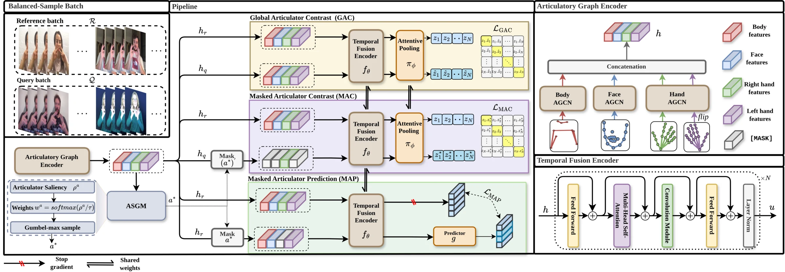
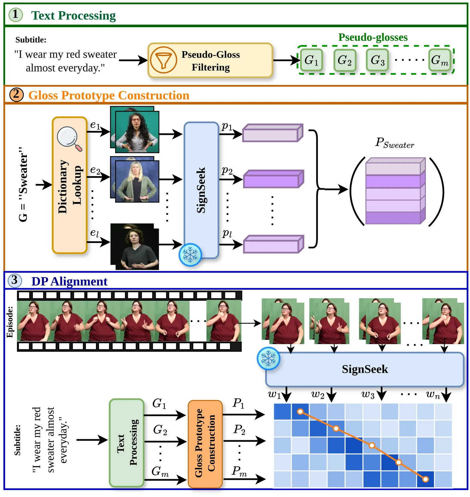

1CVSSP, University of Surrey, United Kingdom
Sign language dictionaries are essential resources for sign language learners, yet automatically retrieving a sign from a dictionary, given only a query video, remains a challenging problem due to the natural variability between signers. Existing sign representation learning methods are built for closed-set recognition, producing embeddings that do not generalise to the open-set, signer-independent setting that retrieval demands. SignSeek closes this gap by contrastively learning sign representations with saliency-guided articulator masking. A contrastive objective aligns same-gloss signs across signers, while our Articulator Saliency-Guided Masking (ASGM) pinpoints the single most critical articulator per sign. This drives two complementary objectives, a masked contrastive alignment (MAC) loss that sees the sign through a single articulator and a masked prediction (MAP) loss that reconstructs it in latent space from the surrounding spatio-temporal context. Pretrained on 266K samples (~5,700 glosses) across multiple sign languages, SignSeek sets a new state-of-the-art performance in cross-corpus retrieval on ASL-Citizen, WLASL, and NMFs-CSL without any downstream fine-tuning. Strikingly, it achieves zero-shot generalisation to an entirely unseen British Sign Language (BSL), surpassing methods explicitly trained on BSL, and transfers seamlessly to isolated sign recognition and subtitle alignment, outperforming prior skeleton-based methods.

Fig. 1 — Overview of SignSeek. A balanced-sample batch of query and reference clips is encoded per articulator by the Articulatory Graph Encoder, fused by a Conformer and pooled into a single embedding. GAC contrasts intact embeddings, MAC aligns a query seen only through its dominant articulator with clean same-gloss references, and MAP predicts the clean representation of a clip whose dominant articulator is masked. ASGM selects that dominant articulator per clip.
| Features | Pre-training (Scale) | ASL-Citizen | WLASL2000 | NMFs-CSL | ||||||
|---|---|---|---|---|---|---|---|---|---|---|
| DCG ↑ | R@1 ↑ | R@5 ↑ | DCG ↑ | R@1 ↑ | R@5 ↑ | DCG ↑ | R@1 ↑ | R@5 ↑ | ||
| Image / video pre-trained features | ||||||||||
| HieraMAE | Kinetics-400 (700 h) | 11.64 | 0.25 | 0.84 | 13.21 | 2.08 | 3.40 | 23.29 | 3.96 | 12.18 |
| HieraMAE | YT-SL-25 (3,000 h) | 12.12 | 0.39 | 1.34 | 14.06 | 2.57 | 4.41 | 28.03 | 7.57 | 18.38 |
| I3D | BSL-1K (273 K) | 13.32 | 0.63 | 2.06 | 17.06 | 3.41 | 6.81 | 25.82 | 6.34 | 16.03 |
| Video-Swin | BOBSL (5,500 K) | 27.21 | 7.55 | 19.38 | 36.84 | 13.97 | 33.39 | 65.31 | 43.97 | 71.62 |
| Pose / keypoint features | ||||||||||
| All Joint Angles | – | 13.82 | 0.57 | 2.17 | 17.92 | 2.54 | 6.50 | 32.51 | 7.93 | 25.50 |
| All Keypoints | – | 14.29 | 0.98 | 2.74 | 19.37 | 3.16 | 8.23 | 36.64 | 12.26 | 30.99 |
| Hand Keypoints | – | 25.91 | 7.96 | 19.58 | 28.11 | 7.57 | 20.92 | 41.72 | 15.91 | 42.62 |
| Hand Joint Angle | – | 26.93 | 8.81 | 21.41 | 30.61 | 9.42 | 24.36 | 44.17 | 18.13 | 46.34 |
| Learned sign representations | ||||||||||
| SignCLIP | Spreadthesign (456 K) | 21.80 | 4.00 | 11.42 | 22.10 | 5.25 | 11.78 | 51.20 | 26.75 | 53.03 |
| MASA | 4× ISLR sets (146 K) | 49.31 | 27.96 | 49.78 | 36.98† | 14.38† | 32.63† | 74.94† | 54.69† | 83.27† |
| SignRep | YT-SL-25 (3,000 h) | 71.21 | 49.95 | 80.09 | 57.93 | 29.92 | 67.41 | 83.05 | 63.04 | 95.63 |
| SignSeek (Ours) | 5× corpora (266 K) | 77.21 | 57.66 | 86.67 | 61.24 | 34.75 | 70.25 | 85.17 | 65.20 | 96.79 |
No method is fine-tuned on the evaluation datasets, which are unseen during pre-training except where marked † (MASA includes WLASL and NMFs-CSL). SignSeek is pretrained on five sign corpora across four languages, none overlapping the evaluation sets. The best result in each column is in the highlighted SignSeek row; the second best is underlined. Scale is in hours (h) for continuous-signing corpora and thousands of clips (K) for isolated-sign sets.
Top-1 dictionary entry retrieved for each query sign. SignSeek returns the correct gloss across signers, while Video-Swin and SignRep often retrieve visually similar but wrong signs.
We query 726 BSL signs, performed by a native signer, against the public BSL SignBank dictionary. SignSeek never saw BSL during pre-training, yet it beats Video-Swin, which was trained on BSL.
| Model | Input | #Params (M) | BSL seen? | R@1 ↑ | R@5 ↑ | mAP ↑ |
|---|---|---|---|---|---|---|
| I3D | RGB | 13.4 | ✓ | 0.55 | 2.22 | 1.67 |
| SignCLIP | Pose | 109.4 | ✗ | 1.02 | 3.05 | 2.85 |
| SignRep | RGB | 51.5 | ✗ | 4.30 | 12.62 | 8.72 |
| MASA | Pose | 68.2 | ✗ | 6.80 | 15.40 | 11.57 |
| Video-Swin | RGB | 49.5 | ✓ | 9.15 | 16.78 | 13.37 |
| SignSeek (Ours) | Pose | 15.7 | ✗ | 12.76 (+3.61) | 29.54 (+12.76) | 20.84 (+7.47) |
#Params: parameters of the frozen feature extractor. BSL seen?: whether the backbone observed British Sign Language during pre-training. No method is fine-tuned on SignBank.

Fig. 2 — A subtitle is filtered into pseudo-glosses (1), each looked up in a language-matched isolated-sign dictionary and encoded by the frozen SignSeek encoder into a prototype bank (2). The same encoder embeds the episode windows, and a monotonic path through the gloss-to-window similarity matrix is decoded by dynamic programming (3).
| Method | How2Sign | BOBSL | ||
|---|---|---|---|---|
| Val | Test | Val | Test | |
| Static baselines | ||||
| Original (audio-based) | 30.63 | 33.06 | 29.09 | 14.11 |
| Original* (fixed offsets) | 31.91 | 36.21 | 49.63 | 44.61 |
| Segment and align | ||||
| Segmentation | 33.38 | 36.17 | 66.24 | 49.58 |
| Segmentation-BSLCP | – | – | 63.61 | 47.75 |
| Segment, embed, and align | ||||
| SignCLIP | 35.51 | 37.51 | 66.70 | 50.68 |
| Dictionary-guided alignment | ||||
| SignSeek | 36.51 | 40.20 | 66.94 | 50.72 |
Sentence-level temporal alignment accuracy (F1@0.5 ↑) on How2Sign and BOBSL. SignSeek is trained from pose with gloss labels only, with no alignment-specific training.
| Method | WLASL | NMFs-CSL | ASL-Citizen | |||
|---|---|---|---|---|---|---|
| Top-1 ↑ | Top-5 ↑ | Top-1 ↑ | Top-5 ↑ | Top-1 ↑ | Top-5 ↑ | |
| Skeleton-based | ||||||
| ST-GCN | 34.40 | 66.57 | 59.9 | 86.8 | 59.52 | 82.68 |
| SignBERT | 39.40 | 73.35 | 67.0 | 95.3 | – | – |
| BEST | 46.25 | 79.33 | 68.5 | 94.4 | – | – |
| SignBERT+ | 48.85 | 82.48 | – | – | – | – |
| MASA | 49.06 | 82.90 | 71.7 | 97.0 | – | – |
| SignCLIP | – | – | – | – | 60.0 | 84.0 |
| SignSeek | 56.65 | 87.67 | 73.8 | 98.8 | 74.7 | 94.0 |
ISLR accuracy after adding a classification layer and fine-tuning the pretrained encoder (per-instance accuracy on WLASL). SignSeek is the strongest skeleton-based method on all three datasets, +7.6 Top-1 over MASA on WLASL and +14.7 over SignCLIP on ASL-Citizen.
This work was supported by EPSRC grant APP24554 (SignGPT — EP/Z535370/1), EPSRC grant APP78083 (UMCS — UKRI3927), and through funding from Google.org via the AI for Global Goals scheme. The authors acknowledge the use of Isambard-AI National AI Research Resource (AIRR), funded by UK DSIT via UKRI and STFC [ST/AIRR/I-A-I/1023].
@article{asasi2026signseeklearningtransferablerepresentations,
title={SignSeek: Learning Transferable Representations for Sign Dictionary Retrieval},
author={Sobhan Asasi and Ozge Mercanoglu Sincan and Richard Bowden},
year={2026},
archivePrefix={arXiv},
}